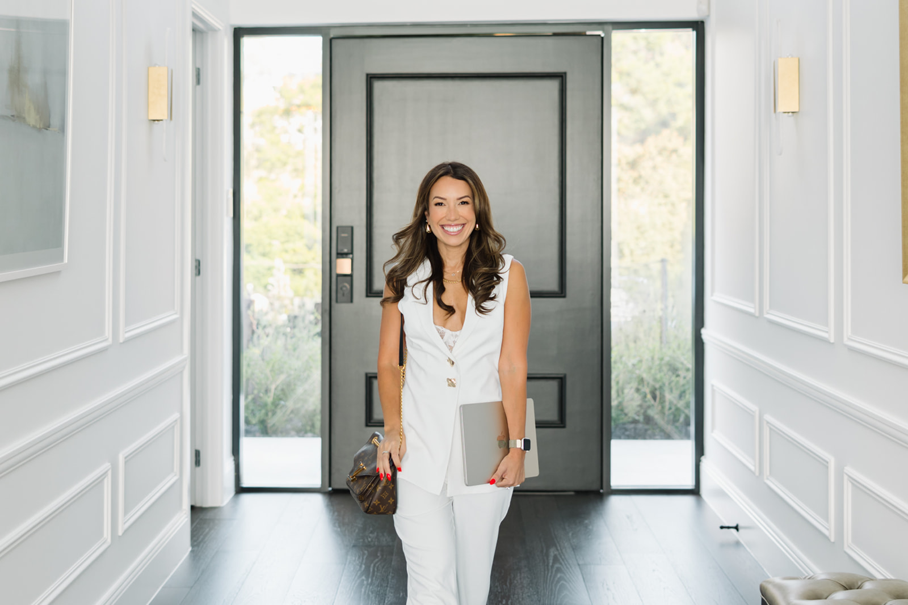

★★★★★
"19 people responded to my DMs. I usually get zero. Tried it again and got another 13. Her stuff works."
Claire AbbottFFB · Stories That Sell
The Freedom Filled Pathway™
Your effort was never the problem. In one free 20-minute class, I'll show you the 5 symptoms, the 3 traps, the Freedom Filled Pathway™, and the one place to start.
Trusted by women building real businesses
But don't just take it from me.
"19 people responded to my DMs. I usually get zero. Tried it again and got another 13. Her stuff works."
"Because of F.R.E.S.H. I started running in October. Just ran 100km in February. Off antidepressants, building self-trust, huge ripple effects on the business."
"I'm having consistent $10K months and working 12 hour weeks."
"200 new email subscribers in 4 weeks. Consistent effort, repurposing content, focusing on community really does pay off."
"Tracy brought my thoughts some new clarity. I recommend it for anyone feeling a little stuck and needing a perspective shift."
"From a few thousand followers and not knowing how to use Instagram, to 174,000 followers and a best-selling book."
"263% more views in October. Views tripled from 2k to 7k this month. Definitely building my Instagram muscle."
"Thank you for helping me break down those steps and see the picture more clearly."
Read this slowly
The one-sentence version of your offer still feels slippery.
Your offer lands in one sentence. You stop adding to it.
Your content gets engagement. The buyers stay quiet.
The launch lands. The numbers move. You trust the promise again.
You added bonuses, calls, and access. The delivery eats your week.
Your content does the work. The rest of the day is yours.
You built this for school pickup. Today the business runs you.
You're home for school pickup. The business holds the life you built it for.
This twenty minutes is the move from one column to the other.
Inside the class
Plus the Freedom Filled® Pathway Map straight to your inbox.
Which one is loudest in your business, and why.
The trying-harder moves that quietly make it heavier.
The three pillars every woman I mentor works through, and why they work.
Your first move, sized for your week, picked for the symptom you nodded hardest at.

Meet Tracy
Mentor, podcaster, mum of two, builder of freedom-filled businesses.
I spent years building a business that looked successful on the outside but felt like a cage on the inside. Overworked, overwhelmed, and quietly wondering whether the version of success I was chasing was even the one I wanted.
Then I rebuilt the whole thing. Not just the strategy, the foundation. A business that runs on my terms, makes real money without burning me out, and gives me the freedom to actually show up for the people I love.
That's what I teach. Not burnout. Not grind. A business built by design, not by default. A Freedom Filled® life.
Tracy
On the other side of these twenty minutes is the version of you running a beautiful business that fits the life you built it for. The first move starts here.